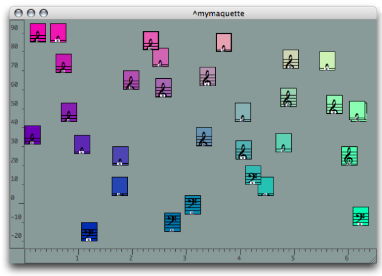

Maquettes
A maquette is an object, which represents both a musical "container[1]" and a visual program .

In a maquette, objects can be manipulated according to temporal and graphical parameters. This includes :
- the graphical and temporal organization of objects,
- the calculation of objects , which can then be connected together to interact like in a patch,
- the calculation of the maquette's temporal structure.
A maquette contains specific boxes : TemporalBoxes , which have a number of characteristics :
- a reference, that is, an instance, a patch, or another maquette contained in the box,
- a position and duration characteristics, which refer to the integration of the box in the maquette's context.
- a "musical value ", produced in the maquette's context.
To a certain extent, the maquette can be considered a patch.
- Container
In OM, a container is an object that contains a number of sub objects, including other containers as well. For instance, a chord-seq that contains chords, a chord that contains notes, a maquette that contains temporal objects, etc.
A propos...(c) Ircam - Centre Pompidou